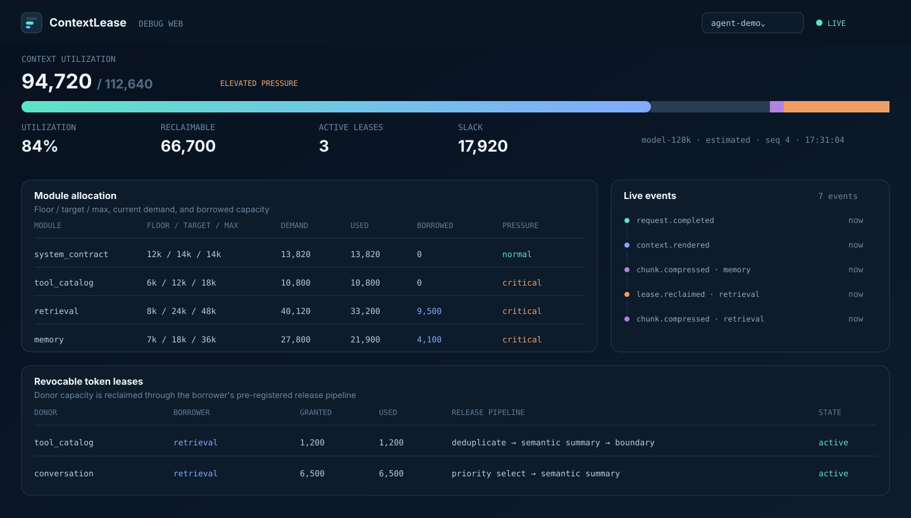

Declare
The host defines each module's floor, target, maximum, weight, lifecycle, protection, and whether it may lend or borrow.
OPEN-SOURCE · PROVIDER-NEUTRAL · DEPENDENCY-FREE CORE
ContextLease manages an agent's context window like a resource allocator: protect critical modules, lend idle capacity, reclaim it safely, and compress only through registered release plans.
lease.granted memory +768
Prompt builders usually discover context pressure at the last possible moment.
ContextLease makes it a controlled lifecycle:
MEMORY-MANAGEMENT IDEAS, APPLIED TO PROMPTS
The host defines each module's floor, target, maximum, weight, lifecycle, protection, and whether it may lend or borrow.
Demand is satisfied through protected floors, local targets, and donor-attributed expansion leases.
If donors grow, borrowers run the release pipelines they registered before receiving extra capacity.
Required terms, monotonic size, final bounds, and privacy-safe trace events are checked every time.
SEMANTIC COMPRESSION, WITHOUT LOCK-IN
Start with deterministic reducers. Add LLM summaries only where semantics matter. Provider IDs live in configuration and credentials stay in environment variables.
"providers": {
"summary-fast": {
"type": "openai-compatible",
"base_url": "https://…/v1",
"model": "summary-model",
"api_key_env": "MODEL_API_KEY"
}
}
"reclaim_pipeline": [{
"algorithm_id":
"builtin.semantic.summary.v1",
"options": {"provider": "summary-fast"}
}]OBSERVABILITY IS PART OF THE ALLOCATOR
The bundled read-only Debug Web streams utilization, module pressure, compression, and donor-to-borrower leases. Prompt bodies stay out of telemetry.

BUILT FOR CONTEXT THAT CHANGES
The core has no opinion about your modules. System contracts, tools, memory, retrieval, examples, and history are external choices—ContextLease gives them a shared, enforceable budget.
START WITH A REAL, RUNNABLE DEMO
Make prompt pressure visible, reclaimable, and testable.